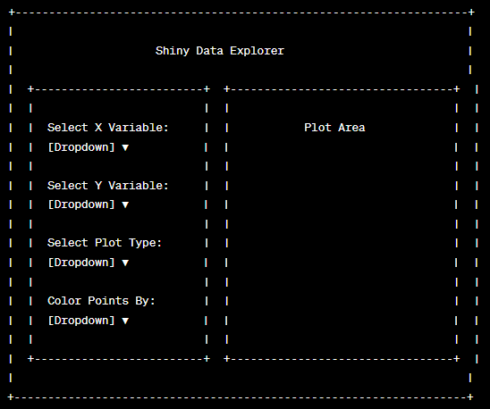

vignettes/Module2.ShinyAppDevelopment.Rmd
Module2.ShinyAppDevelopment.RmdSt. Jude members may view an interactive form of this document here. Must be connected to the St. Jude network to view.
There’s a lot that can be done with Shiny, and it’s easy to get overwhelmed at first.
In this module, we will: - show why designing your app before you start coding is important, - demonstrate a few different layout options provided by Shiny, - provide examples of how to introduce interactivity into your app, - and work through a more complex example of a Shiny app to cement the concepts we’ve learned.
Before starting to code your Shiny app, it’s important to sketch out the UI and think about how your data will be used. This allows you to design the app in a way that best meets your users’ needs.
For instance, if we’re designing a Shiny app to explore a given dataset, we might want to allow users to:
Given these needs, we can sketch out a UI that includes select inputs for the x and y variables, the plot type, and the color, as well as a main panel for displaying the plot.
Or we can ask chatGPT to do it for us:

We could, but if your app layout/behavior sucks, nobody will use it.
If it’s unwieldy, people will almost immediately get frustrated and not bother with it.
If it’s ugly, people will think it’s unprofessional and not bother with it.
If it’s confusing, people will feel dumb (or think you’re dumb and built it wrong) and not bother with it.
If it’s slow, people will get bored and not bother with it.
Learn from me. I’ve made all of these mistakes. These are the realities of software development, especially in science.
Without planning, you end up creating more work for yourself down the line in the form of unnecessary rewrites, buggy interactions, and confusing layouts.
Here are some of the bad things that will eventually happen if you don’t get in the habit of planning your applications out:
Adding Features Without Prior Planning: Let’s say you initially design your app to display a scatter plot of two variables from a given dataset, and you later decide to add the option for users to display a histogram of a single variable. Because these two plot types require different inputs (a single variable for the histogram vs. two variables for the scatter plot), you may have to substantially rewrite your UI and server code to handle this new functionality. If you had planned for this feature from the start, you could have designed your UI and server in a way that accommodates both plot types, saving you time and effort.
Failure to Consider Data Structure: Suppose your Shiny app is designed around a specific dataset, which is well-structured and doesn’t contain any missing values. If you then decide to use a different dataset that contains missing values or a different structure, you may have to rewrite parts of your app to handle these differences. Proper planning involves considering the structure and peculiarities of your data, which can help you write more robust code that can handle different types of data.
Not Anticipating User Inputs: It’s important to design your Shiny app in a way that anticipates a wide range of user inputs. For example, if your app includes a text input where users can enter a title for a plot, you might not initially consider that users could enter very long titles that disrupt the layout of your app. If you don’t plan for this possibility, you might have to go back and add code to handle it, such as by truncating long titles or adjusting the layout to accommodate them.
Complex UI without Logical Layout: Without proper planning, you might end up with a UI that has a variety of widgets (sliders, checkboxes, dropdowns) without a logical layout, which can make the app difficult for users to navigate. You might then have to spend extra time rearranging and reorganizing your UI. However, if you had sketched out your UI beforehand and considered how users will interact with your app, you could have designed a logical, user-friendly layout from the start.
So before you start, ask yourself (and potential users!) a few questions:
Slow is smooth, but smooth becomes fast. Or move fast and break things. There’s some sort of saying for this.
Whatever, just plan your app. A back of the knapkin sketch is fine to start, just put a bit of thought into it.
Suppose we have a simple Shiny app that was originally designed to
display a scatter plot for the iris dataset. The UI contains two
selectInput widgets for users to select the variables for
the x and y axes of the scatter plot.
library(shiny)
library(ggplot2)
# Define UI
ui <- fluidPage(
titlePanel("Simple Scatter Plot"),
sidebarLayout(
sidebarPanel(
selectInput("xvar", "X Variable", names(iris)[1:4]), # Limit to the numeric columns only.
selectInput("yvar", "Y Variable", names(iris)[1:4])
),
mainPanel(
plotOutput("scatterPlot")
)
)
)
# Define Server
server <- function(input, output) {
output$scatterPlot <- renderPlot({
ggplot(iris, aes(x = .data[[input$xvar]], y = .data[[input$yvar]])) +
geom_point()
})
}
# Run the Shiny app
shinyApp(ui = ui, server = server, options = list(height = 550))Now, let’s say we want to add a feature for users to display a
histogram of a single variable. We add a radioButton widget
for users to select the plot type and a new selectInput for
the histogram variable. We also modify the server function to render the
plot based on the selected plot type.
ui <- fluidPage(
titlePanel("Simple Scatter Plot"),
sidebarLayout(
sidebarPanel(
radioButtons("plotType", "Plot Type", c("Scatter Plot", "Histogram")),
selectInput("xvar", "X Variable", names(iris)[1:4]), # Limit to the numeric columns only.
selectInput("yvar", "Y Variable", names(iris)[1:4]),
selectInput("histVar", "Histogram Variable", names(iris)[1:4])
),
mainPanel(
plotOutput("plot")
)
)
)
server <- function(input, output) {
output$plot <- renderPlot({
if (input$plotType == "Scatter Plot") {
ggplot(iris, aes(x = .data[[input$xvar]], y = .data[[input$yvar]])) +
geom_point()
} else {
ggplot(iris, aes(x = .data[[input$histVar]])) +
geom_histogram(binwidth = 0.5)
}
})
}
shinyApp(ui = ui, server = server, options = list(height = 550))While this code will work, it’s not very clean or efficient. The UI has become cluttered with inputs that don’t apply to all plot types, and the server function contains an if-else statement that will become even more unwieldy if we decide to add more plot types in the future.
If we had planned for the possibility of multiple plot types from the start, we could have designed the UI and server in a way that more easily accommodates this feature, such as by grouping the inputs for each plot type and using reactive expressions to generate the plots.
Can you think of a better way to design the UI and server for this app? Take a minute to think about it before expanding the solution below.
One way would to use conditionalPanel() in the UI, which
is a way to show/hide UI elements based on a condition (like which plot
type is selected).
ui <- fluidPage(
titlePanel("Interactive Plots"),
sidebarLayout(
sidebarPanel(
radioButtons("plotType", "Plot Type", c("Scatter Plot", "Histogram")),
conditionalPanel(
condition = "input.plotType == 'Scatter Plot'",
selectInput("xvar", "X Variable", names(iris)[1:4]),
selectInput("yvar", "Y Variable", names(iris)[1:4])
),
conditionalPanel(
condition = "input.plotType == 'Histogram'",
selectInput("histVar", "Histogram Variable", names(iris)[1:4])
)
),
mainPanel(
plotOutput("plot")
)
)
)
server <- function(input, output) {
scatterPlot <- reactive({
ggplot(iris, aes(x = .data[[input$xvar]], y = .data[[input$yvar]])) +
geom_point()
})
histogram <- reactive({
ggplot(iris, aes(x = .data[[input$histVar]])) +
geom_histogram(binwidth = 0.5)
})
output$plot <- renderPlot({
if (input$plotType == "Scatter Plot") {
scatterPlot()
} else {
histogram()
}
})
}
shinyApp(ui = ui, server = server, options = list(height = 550))Now, the UI only displays the relevant inputs for the selected plot
type, making it cleaner and easier for users to interact with. The
server uses reactive expressions to generate the plots, making the code
more modular and easier to maintain. If we decide to add more plot types
in the future, we can easily add more conditionalPanel()s
in the UI and more reactive expressions in the server.
Shiny allows for almost any layout you can imagine, but there are a few common layouts that you’ll see in most Shiny apps.
These are very common, as they provide a nice layout by default and are pretty flexible. They also have a bit more polish and pizazz than the default basic Shiny layout.
library(shiny)
library(shinydashboard)
ui <- dashboardPage(
dashboardHeader(title = "Shiny Dashboard"),
dashboardSidebar(
sidebarMenu(
menuItem("Dashboard", tabName = "dashboard", icon = icon("dashboard")),
menuItem("Settings", tabName = "settings", icon = icon("wrench"))
)
),
dashboardBody(
tabItems(
tabItem(
tabName = "dashboard",
h2("Dashboard tab content")
),
tabItem(
tabName = "settings",
h2("Settings tab content")
)
)
)
)
server <- function(input, output) { }
shinyApp(ui, server, options = list(height = 500))This is another flexible layout that is very common. It’s really useful for more complex apps that have multiple pages.
ui <- navbarPage(
"Shiny App",
tabPanel(
"Plot",
plotOutput("plot")
),
tabPanel(
"Summary",
verbatimTextOutput("summary")
),
tabPanel(
"Table",
tableOutput("table")
)
)
server <- function(input, output) {
output$plot <- renderPlot({
plot(iris)
})
output$summary <- renderPrint({
summary(iris)
})
output$table <- renderTable({
head(iris)
})
}
shinyApp(ui = ui, server = server, options = list(height = 500))Tabsets are super useful ways to show multiple plots or windows. Note that tabsets can be used in any layout, which opens up a lot of possibilities.
ui <- fluidPage(
titlePanel("Tabsets"),
tabsetPanel(
tabPanel("Plot", plotOutput("plot")),
tabPanel("Summary", verbatimTextOutput("summary")),
tabPanel("Table", tableOutput("table"))
)
)
server <- function(input, output) {
output$plot <- renderPlot({
plot(iris)
})
output$summary <- renderPrint({
summary(iris)
})
output$table <- renderTable({
head(iris)
})
}
shinyApp(ui, server, options = list(height = 550))The ol’ tried and true that we’ve been using to this point.
ui <- fluidPage(
titlePanel("Sidebar"),
sidebarLayout(
sidebarPanel(
sliderInput("bins",
"Number of bins:",
min = 1,
max = 50,
value = 30
)
),
mainPanel(
plotOutput("distPlot")
)
)
)
server <- function(input, output) {
output$distPlot <- renderPlot({
x <- faithful[, 2]
bins <- seq(min(x), max(x), length.out = input$bins + 1)
hist(x, breaks = bins, col = "darkgray", border = "white")
})
}
shinyApp(ui, server, options = list(height = 500))These are simple examples to demonstrate a few common layout types, but Shiny is very flexible and allows for almost any layout you can imagine. Many of these can be mixed and matched, and you can even create your own custom layouts.
Most UI elements we’ve shown are either inputs or layout functions, but you can also use HTML tags to create UI elements directly. This is useful for adding labels, headers, usage information, images, etc to your app.
These tags are simple to use:
ui <- fluidPage(
titlePanel("Shiny HTML tags example"),
h1("h1 tag"),
h2("h2 tag"),
h3("h3 tag"),
h4("h4 tag"),
p("p tag for paragraph text"),
br(), # br tag for line break
strong("strong tag for strong emphasis"),
br(),
em("em tag for emphasized text"),
br(),
a(href = "https://www.google.com", "a tag for hyperlink"),
br(),
img(src = "https://cataas.com/cat/says/hello!", "img tag for image", width = 200),
hr(), # hr tag for horizontal rule
div("div tag for a division, or section, of the page"),
span("span tag for a section in a line"),
br(),
code("code tag for a piece of computer code"),
br(),
pre("pre tag for preformatted text")
)
server <- function(input, output) { }
shinyApp(ui, server, options = list(height = 700))Thus far, our outputs in our apps have been pretty static. That is, the basic workflow is that the user changes an input, and the output is updated accordingly, but the user can’t interact with the output itself.
Time to change that, as interactive outputs are one of the most powerful features of Shiny. They can allow your user to truly immerse themselves in the data and explore it in ways that are impossible with static outputs.
ggplotly
One of the easiest ways to make a plot interactive is to use the
ggplotly() function from the plotly package.
This function takes a ggplot object and converts it to an
interactive plot.
It’s a super simple starting point and works fairly well with most
ggplotobjects.
Let’s take our scatter plot example from earlier and make it interactive:
library(plotly)
ui <- fluidPage(
titlePanel("Interactive Scatter Plot"),
sidebarLayout(
sidebarPanel(
selectInput("xvar", "X Variable", names(iris)[1:4]), # Limit to numeric variables
selectInput("yvar", "Y Variable", names(iris)[1:4])
),
mainPanel(
plotlyOutput("scatterPlot") # Use plotlyOutput instead of plotOutput
)
)
)
# Define Server
server <- function(input, output) {
output$scatterPlot <- renderPlotly({ # Use renderPlotly instead of renderPlot
p <- ggplot(iris, aes(x = .data[[input$xvar]], y = .data[[input$yvar]])) +
geom_point()
ggplotly(p) # Convert ggplot2 plot to plotly plot
})
}
# Run the Shiny app
shinyApp(ui = ui, server = server, options = list(height = 500))This allows the user to interact with the plot itself - click and drag to zoom in, hover over points to see their values, download the plot as an image, double click to reset the zoom, etc.
These are built-in functionalities of any plotly plot, so you don’t have to do anything extra to get them (though you can customize them).
You can also create more complex interactive behaviors using other
plotly functions that respond to the user doing something
to the plot, like selecting data or clicking a point.
As an example, let’s adjust this app to allow the user to click a
point on the plot and see the values of that point in a table. To do so,
we can use plotly’s event_data() function, which returns
information about the plot based on the user’s interaction with it.
ui <- fluidPage(
titlePanel("Interactive Scatter Plot with Click"),
sidebarLayout(
sidebarPanel(
selectInput("xvar", "X Variable", names(iris)[1:4]), # Limit to numeric variables
selectInput("yvar", "Y Variable", names(iris)[1:4])
),
mainPanel(
plotlyOutput("scatterPlot"),
tableOutput("pointData") # Table to display data for clicked point
)
)
)
server <- function(input, output) {
output$scatterPlot <- renderPlotly({
p <- ggplot(iris, aes(x = .data[[input$xvar]], y = .data[[input$yvar]])) +
geom_point()
ggplotly(p)
})
output$pointData <- renderTable({
clickData <- event_data("plotly_click") # Get data for clicked point
# If a point has been clicked, display its data
if (!is.null(clickData)) {
iris[clickData$pointNumber + 1, ]
}
})
}
shinyApp(ui = ui, server = server, options = list(height = 625))In this app, when a user clicks on a point in the scatter plot, the
event_data("plotly_click") function gets the data for the
clicked point, and this data is then displayed in a table. Note that we
use clickData$pointNumber + 1 to index into the iris
dataset because the point numbers from event_data() are
0-indexed (due to it actually being a javascript library originally),
whereas R’s indexing is 1-based.
We could also look for other events, like the user selecting many points via click and drag.
ui <- fluidPage(
titlePanel("Interactive Scatter Plot with Click and Drag"),
sidebarLayout(
sidebarPanel(
selectInput("xvar", "X Variable", names(iris)[1:4]), # Limit to numeric variables
selectInput("yvar", "Y Variable", names(iris)[1:4])
),
mainPanel(
plotlyOutput("scatterPlot"),
tableOutput("clickedData"), # Table to display data for clicked point
tableOutput("selectedData") # Table to display data for selected points
)
)
)
server <- function(input, output) {
output$scatterPlot <- renderPlotly({
p <- ggplot(iris, aes(x = .data[[input$xvar]], y = .data[[input$yvar]])) +
geom_point()
ggplotly(p) %>%
layout(dragmode = "select") # Enable point selection on click and drag rather than zoom
})
output$clickedData <- renderTable({
clickData <- event_data("plotly_click") # Get data for clicked point
# If a point has been clicked, display its data
if (!is.null(clickData)) {
iris[clickData$pointNumber + 1, ]
}
})
output$selectedData <- renderTable({
selectData <- event_data("plotly_selected") # Get data for selected points
# If points have been selected, display their data
if (!is.null(selectData)) {
iris[selectData$pointNumber + 1, ]
}
})
}
shinyApp(ui = ui, server = server, options = list(height = 700))These are very basic examples of how to use
event_data(). In a more complex app, you could use the data
for the clicked point to trigger other actions, such as filtering a
dataset, updating another plot, etc.
plotly
plotly is incredibly useful in Shiny apps, and it has
some really cool features that we haven’t even touched on here.
To learn more about it, I highly recommend taking a look at the plotly book and digging through the plotly R website, which has an expansive gallery and tons of interactive examples.
More often than not, there is already an existing plotly example to generate the figure you want (or at least get pretty close), so checking the gallery is a great place to start.
This is where my opinion starts to bleed in.
I am a firm believer that all Shiny apps should be called from a function.
The benefits of this are numerous:
Code Reusability: Functions can be used across multiple apps or across different parts of the same app. This can reduce code duplication and make your code more efficient and easier to maintain.
Code Testing: By breaking down your app into functions, you can test each function individually. This makes it easier to pinpoint and resolve issues in your code.
Simplicity and Readability: Functions make your code simpler and more readable by abstracting away complexity. Instead of having to understand all the details of your code at once, you or others can understand what each function does in isolation.
Generic Data: When your Shiny app is functionized to intake generic data, it becomes more flexible and can be used with different datasets. This is particularly useful when you are building applications for exploratory data analysis, where the data can change frequently.
As an example, let’s make our previous application callable from a function.
First, we’ll create a function that takes in a dataset and returns a Shiny app. We’ll have to tweak a few changes to the code to make it work with whatever data we feed in rather than just the iris dataset.
create_shiny_scatter <- function(data) {
ui <- fluidPage(
titlePanel("Interactive Scatter Plot with Click and Drag"),
sidebarLayout(
sidebarPanel(
selectInput("xvar", "X Variable", names(data)),
selectInput("yvar", "Y Variable", names(data))
),
mainPanel(
plotlyOutput("scatterPlot"),
tableOutput("clickedData"),
tableOutput("selectedData")
)
)
)
server <- function(input, output) {
output$scatterPlot <- renderPlotly({
p <- ggplot(data, aes(x = .data[[input$xvar]], y = .data[[input$yvar]])) +
geom_point()
ggplotly(p) %>%
layout(dragmode = "select")
})
output$clickedData <- renderTable({
clickData <- event_data("plotly_click")
if (!is.null(clickData)) {
data[clickData$pointNumber + 1, ]
}
})
output$selectedData <- renderTable({
selectData <- event_data("plotly_selected")
if (!is.null(selectData)) {
data[selectData$pointNumber + 1, ]
}
})
}
# create and return the app
shinyApp(ui = ui, server = server, options = list(height = 700))
}Now, we can call this function with any dataset we want to create a Shiny app to explore the data.
Like for the iris dataet.
create_shiny_scatter(iris)Or maybe we’re sick of flowers and want some excitement in our lives.
create_shiny_scatter(mtcars)Too simple for you? Consider how you would break up the UI and server code into their own functions. Or how to incorporate Shiny Modules to make your app even more modular.
I am in agreement with the Engineering Shiny book that any Shiny app of moderate complexity should be made into a package.
And by moderate complexity, if your app is >1000 lines, you should probably start thinking about it. Creating an R package may seem intimidating at first, but it’s actually very straightforward once you do it once.
Packaging your app forces you to provide barebones documentation for it, provides better code organization, and makes it easy to share your app with others.
These are generally all good things. Learning to make an R package is beyond the scope of this workshop, but if you plan to develop complex Shiny apps, it will make your life much easier.
Okay, we’ve covered a lot so far - Shiny app structure, reactivity, layout and UI, interactivity, and how to make an app more generic and reusable.
Now we’ll try to put it all together in a single exercise to create an app that most people will find useful.
For this exercise, we will create a Shiny app that allows users to run and visualize a Principal Component Analysis (PCA). PCA provides insights into the underlying structure of your data. It reveals the internal structure of the data in a way that best explains the variance in your data.
It’s useful for exploratory data analysis, dimensionality reduction, and data visualization.
The app should allow users to:
It should also be callable from a function so as to be generic and reusable.
Seem like a lot? It is!
But break it down into its individual components and it’s not so bad.
And I’ll even give ya a little help to get started.
For this exercise, we’ll use a more “real” dataset - the “airway” data, where different airway smooth muscle cells were treated with dexamethasone.
I’m not going to explain the data processing here, but it’s a pretty standard analysis of bulk RNA-seq data to get normalized counts.
library("airway")
library("magrittr")
library("DESeq2")
library("org.Hs.eg.db")
library("PCAtools")
data("airway")
airway$dex %<>% relevel("untrt")
ens <- rownames(airway)
library(org.Hs.eg.db)
symbols <- mapIds(org.Hs.eg.db,
keys = ens,
column = c("SYMBOL"), keytype = "ENSEMBL"
)
symbols <- symbols[!is.na(symbols)]
symbols <- symbols[match(rownames(airway), names(symbols))]
rownames(airway) <- symbols
keep <- !is.na(rownames(airway))
airway <- airway[keep, ]
dds <- DESeqDataSet(airway, design = ~ cell + dex)
dds <- DESeq(dds)
vst <- assay(vst(dds))
# Remove rows with no variance as they will cause an error.
vst <- vst[rowVars(vst) > 0, ]For the sake of time (which I am just assuming I will be running out
of), here’s how to run a PCA with PCAtools given our vst
matrix and airway metadata.
scale and center are optional arguments
that scale and center the data prior to running the PCA. Generally, this
should almost always be done, but those arguments could be controlled by
the user to allow full control.
removeVar is the variance cutoff for features to be
included in the PCA - this allows the user to ignore features with very
little variance that may not be informative. This is another argument
that could be controlled by the user (hint hint).
# The actual PCA results can be accessed with:
p$rotatedThis analysis should be part of the app. Probably a
reactive() function that uses the data matrix and metadata
as inputs and returns the PCA results…
Take a few minutes and plan out your app. Sketch out the UI and where you want inputs and outputs to go, figure out what the function parameters should be, and maybe pseudocode the app.
Try to break it down into small parts and tackle them one at a time.
Read the documentation for the functions you’ll be using and try to
understand what they do and how they work - the ?? operator
is your friend.
If you get stuck, ask one of the instructors for help.
There’s no pressure here - so take your time and try to have fun with it!
Expand the code block below to see one possible solution.
# Load required libraries
library(shiny)
library(PCAtools)
library(ggplot2)
library(plotly)
# Define the PCA Shiny App as a function
PCA_shiny_app <- function(data, meta) {
# Ensure data is a matrix and meta is a data frame
data <- as.matrix(data)
meta <- as.data.frame(meta)
ui <- fluidPage(
titlePanel("PCA App"),
sidebarLayout(
sidebarPanel(
numericInput("var_remove", "Features to Remove by Variance", min = 0, max = 1, step = 0.01, value = 0.5),
selectInput("pc_x", "Principal Component for X-Axis", choices = paste0("PC", 1:5)),
selectInput("pc_y", "Principal Component for Y-Axis", choices = paste0("PC", 1:5), selected = "PC2"),
selectInput("color_var", "Color Variable", choices = colnames(meta)),
checkboxInput("scale", "Scale Data", value = TRUE),
checkboxInput("center", "Center Data", value = TRUE),
actionButton("update", "Update Plots")
),
mainPanel(
plotlyOutput("PCA_plot"),
tableOutput("sample_info")
)
)
)
server <- function(input, output, session) {
# Reactive expression for PCA
pca_res <- reactive({
PCAtools::pca(data, metadata = meta, scale = input$scale, removeVar = input$var_remove, center = input$center)
})
# PCA plot
output$PCA_plot <- renderPlotly({
input$update
req(pca_res())
pca_df <- as.data.frame(isolate(pca_res()$rotated)[, c(isolate(input$pc_x), isolate(input$pc_y))])
pca_df <- cbind(pca_df, meta)
p <- ggplot(pca_df, aes(x = .data[[isolate(input$pc_x)]], y = .data[[isolate(input$pc_y)]], color = .data[[isolate(input$color_var)]])) +
geom_point() +
theme_bw()
ggplotly(p)
})
# Update sample info on click
output$sample_info <- renderTable({
req(pca_res())
clickData <- event_data("plotly_click") # Get data for clicked point
# If a point has been clicked, display its data
if (!is.null(clickData)) {
meta[clickData$pointNumber + 1, ]
}
})
}
# Run the app
shinyApp(ui = ui, server = server, options = list(height = 650))
}We could now call the function with our data and metadata to run the app.
PCA_shiny_app(vst, colData(airway))In this module, we covered a ton:
Principles of App Design: We stressed the important of app design and planning, however basic. We also covered why doing this upfront can save you future headaches.
Common Layouts: These span the gambit from dashboards to tabsets and allow all sorts of flexibility.
Providing Interactivity: We covered the basics of making a plot interactive, and how to use that interactivty to trigger other events.
Functionizing an App: We took a look at how to turn an app into a function that can be called with different data to improve reusability.
The Big Exercise: We took a look at a real-world example of how to build a re-usable app from scratch.
In the last module, we’ll take a look at debugging Shiny apps and how to deploy an app for others to use.